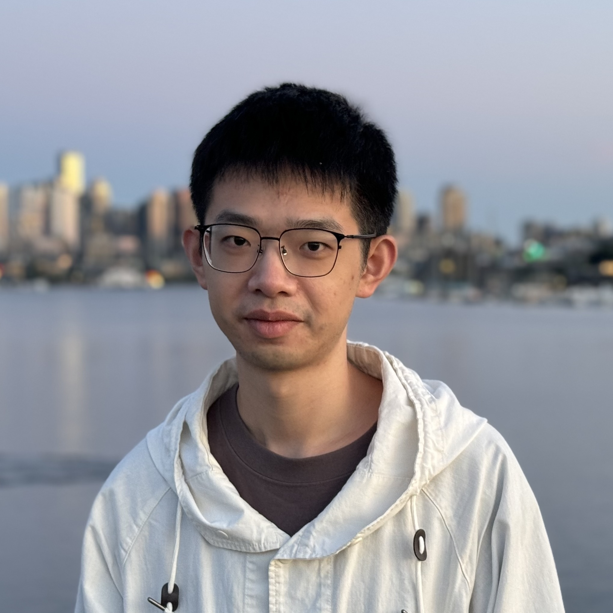

Yiqun Lin
Research Fellow at UCL
Email:
I am currently a Research Fellow at University College London (UCL), working with Prof. Yukun Zhou and Prof. Pearse Keane. My research interests primarily center on medical image analysis and computer vision, with a specific focus on developing foundation models for healthcare applications.
Prior to joining UCL, I obtained my Ph.D. in Electronic and Computer Engineering from HKUST, advised by Prof. Xiaomeng Li. I completed my M.Phil. at CUHKSZ under the supervision of Prof. Xiaoguang Han, and received my B.Eng. degree in Software Engineering from Tongji University.
News
- [18/01/2026] Our work "Real-Time Reconstruction of 3D Bone Models via Very-Low-Dose Protocols" has been accepted for publication in npj Digital Medicine.
- [06/11/2025] Started as a Research Fellow at UCL.
Selected Publications
See Google Scholar for the full list.
* indicates equal contribution